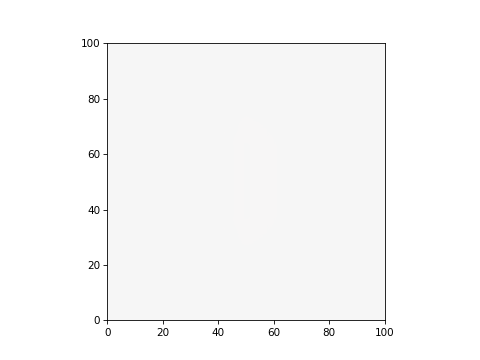
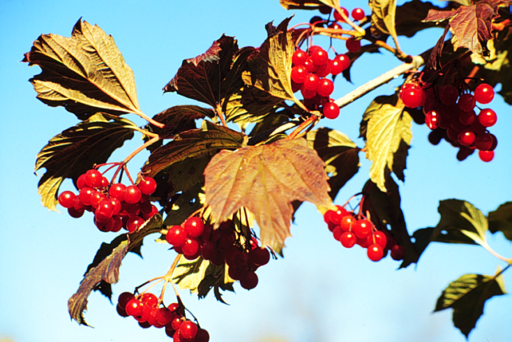

Rastrová grafika #
Do dokumentu môžeme vkladať rastrové obrázky v štandardných formátoch (*.bmp, *.png, *.jpg, *.gif) niekoľkými spôsobmi, pomocou direktív prostredia Sphinx alebo ako pri tworbe www stránok HTML tagom. Na Obr. 4 je rastrový obrázok vo formáte *.bmp s upravenou veľkosťou, definovanou polohou v texte, priradenou referenciou a URL odkazom, ktorý sa otvorí po kliknutí na obrázok.
Obr. 4 Obrázok vo formáte *.bmp s priradeným URL odkazom.#
Metódy vkladania rastrových obrázkov #
{image} #
Direktíva {image} je určená pre vloženie obrázku do textu bez jeho popisu.
```{image} meno_súboru
:name: string - referencia na obrázok
:height: number - výška v px
:width: number - šírka v px
:scale: number - škálovanie v %
:align: string - poloha left, center, right
:target: string - URL po kliknutí na obrázok
:alt: text - alternatívny text ak aplikácia nemôže zobraziť obrázok
```
{kind=link}
Vložený obrázok bez popisného textu, je možné sa na neho odkazovať referenciou v parametri name.
Použitie direktívy {image}
Zobrazenie obrázku bez popisného textu.
```{image} ./img/PHOT0173.BMP
:alt: kvet
:width: 350px
:align: center
```
{figure} #
Direktíva {figure} je určená pre vloženie obrázku do textu s popisom. Popis obrázku môže byť štandardný Markdown blok textu.
```{figure} súbor
:name: string - referencia na obrázok
:height: number - výška v px
:width: number - šírka v px
:scale: number - škálovanie v %
:align: string - poloha left, center, right
:target: string - URL po kliknutí na obrázok
:alt: text - alternatívny text ak aplikácia nemôže zobraziť obrázok
Formátovaný popis obrázku
```

Obr. 5 Zobrazenie animovaného GIF obrázku.#
Použitie direktívy {figure}
Zobrazenie obrázku s popisným textom.
```{figure} ./img/img_eigen_01.gif
:alt: Elektromagnetické pole
:align: center
Zobrazenie animovaného GIF obrázku.
```
{subfigure} #
Rozšírenie sphinx_subfigure umožňuje ukladanie obrázkov do mriežky.
Inštalácia rozšírenia
pip install sphinx-subfigure
Konfigurácia v conf.py
extensions = ["sphinx_subfigure"]
numfig = True # optional
Formát direktívy
````{subfigure} format_mriežky
:layout-sm: format_mriežky - zobrazenie pre malé displeje
:layout-lg: format_mriežky - zobrazenie pre stredné displeje
:layout-xl: format_mriežky - zobrazenie pre veľké displeje
:layout-xxl: format_mriežky - zobrazenie pre veľmi velké displeje
:gap: number - medzera v px medzi obrázkami
:subcaptions: position - popis obrázkov above/below
:name: string - referencia na obrázok
:class-grid: outline
:width: number - šírka celéj mriežky obrázkov na stránke
```{image} file_A - formát obrázku v mriežke
:alt: Image A - parametre direktívy {image} s popisom
...
```
... - formáty nasledujúcich obrázkov
text - popis celého obrázku s priradeným číslovaním
````
Parameter format_rastra definuje formátovanie rastra obrázkov po riadkoch, jednotlivé riadky sú oddelené znakom |. Mriežka musí vytvárať obdĺžnikovú oblasť, chýbajúce obrázky sú vo formátovaní nahradené znakom ..
{subfigure} ABC [A] [B] [C]
{subfigure} A|B|C [A]
[B]
[C]
{subfigure} AB|CD [A] [B]
[C] [D]
{subfigure} AB|AC|AD [B]
[A] [C]
[D]
{subfigure} .A.|BCD [A]
[B] [C] [D]
{kind=link}
{kind=link}
{kind=link}
Obr. 6 Obrázky v rastri#
Použitie direktívy {subfigure}
````{subfigure} AB|CD
:layout-sm: A|B|C|D
:gap: 2px
:subcaptions: below
:width: 500px
```{image} ./img/PHOT0172.BMP
:alt: Image A
:width: 200px
```
```{image} ./img/PHOT0173.BMP
:alt: Image B
:width: 200px
```
```{image} ./img/PHOT0175.BMP
:alt: Image C
:width: 200px
```
```{image} ./img/PHOT0185.BMP
:alt: Image D
:width: 200px
```
Obrázky v rastri
````
<img> #
Pre vkladanie obrázkov do textu môžeme použiť <img> tag z HTML značkovacieho jazyka.
{kind=link}

Obrázok nie je možné popísať a nedá sa mu priradiť referencia.
Použitie tagu <img>
<img src="img/PHOT0200.BMP" alt="kvetina" width="350px">